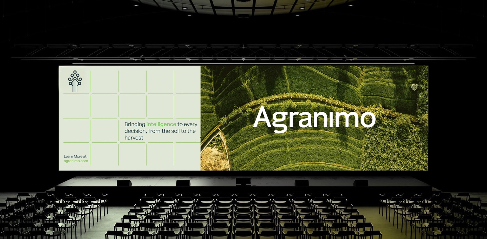
Building & Growing the Brand
Making agricultural technology easier to understand.
Agranimo uses field data to help growers make decisions about crops, climate and farm operations.
I developed the visual identity to make the company’s agricultural technology easier to explain and present consistently.
The work continued across the website, digital platform, social media, campaigns, print and physical applications.
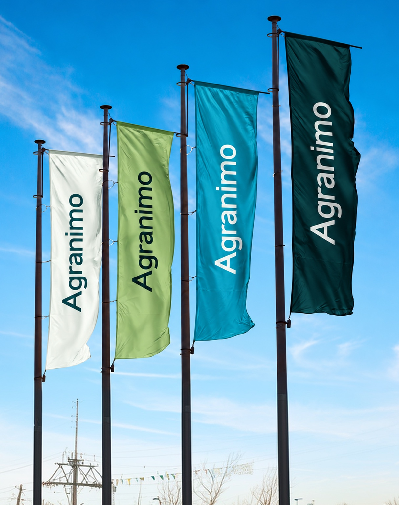
A clearer identity for Agranimo.
Agranimo had already defined its market and customer segments when I joined the project. My role was to turn that strategic work into a clear, credible visual identity.
Make complex agricultural and technical information easier to understand through design.
Create a recognizable identity that reflects both the technology and the agriculture behind it.
A colour palette inspired by nature.
I took inspiration from fields, vegetation, water and soil when developing the palette. Greens connect the identity to agriculture, while teal and blue support its technical side.
Pale neutrals balance the stronger colours and keep text, imagery and data easy to read.
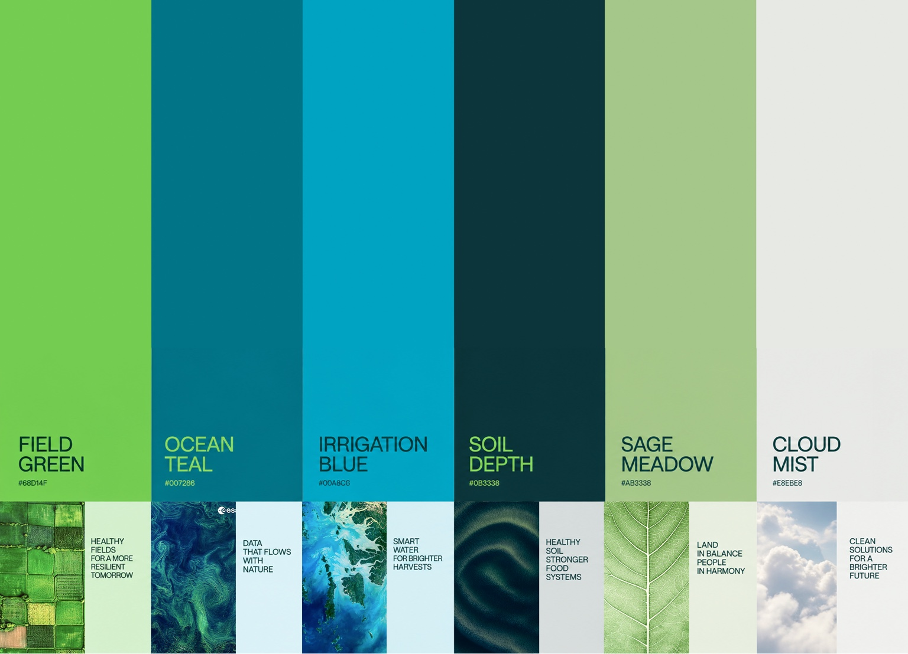
Website design.
I used a clear grid and type hierarchy to organise the website’s content. Agricultural photography gives visitors a direct connection to the fields and crops behind the technology.
The aim was to help people understand what Agranimo offers and find the information they need.
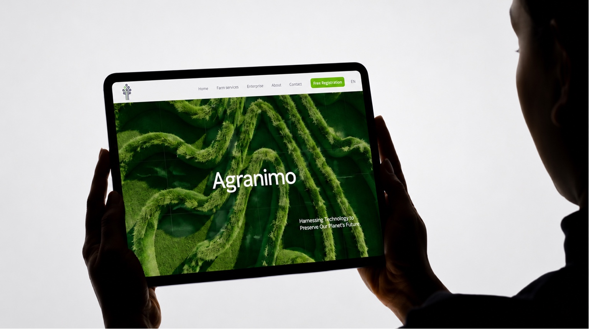
Bringing the identity into the product.
I worked with the UX team to apply the identity to Agranimo’s digital platform.
We adapted the colours, typography and interface components for maps, field monitoring, alerts and environmental data, keeping readability central to the design.
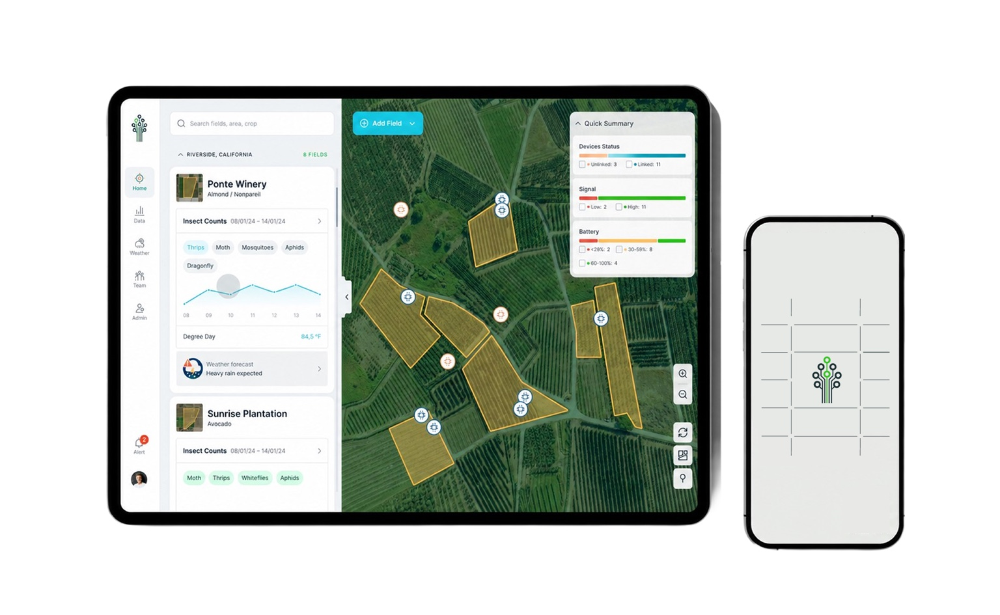
The identity across the website.
The website combines agricultural photography with the brand’s grid, typography and colours.
I used these elements consistently across pages to connect the website with the rest of the identity.
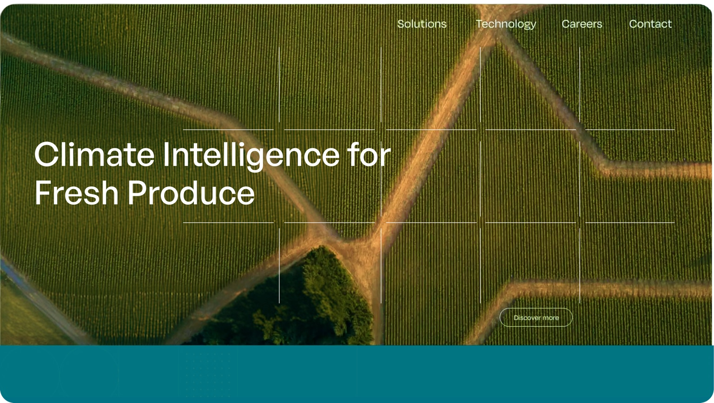
Photography and grid.
I chose imagery of crops, soil, water, people and landscapes to show the agricultural context of Agranimo’s work.
The grid takes its cue from mapping and field segmentation. Applied to selected photographs, it gives the images a consistent structure and makes the brand recognizable beyond the logo.
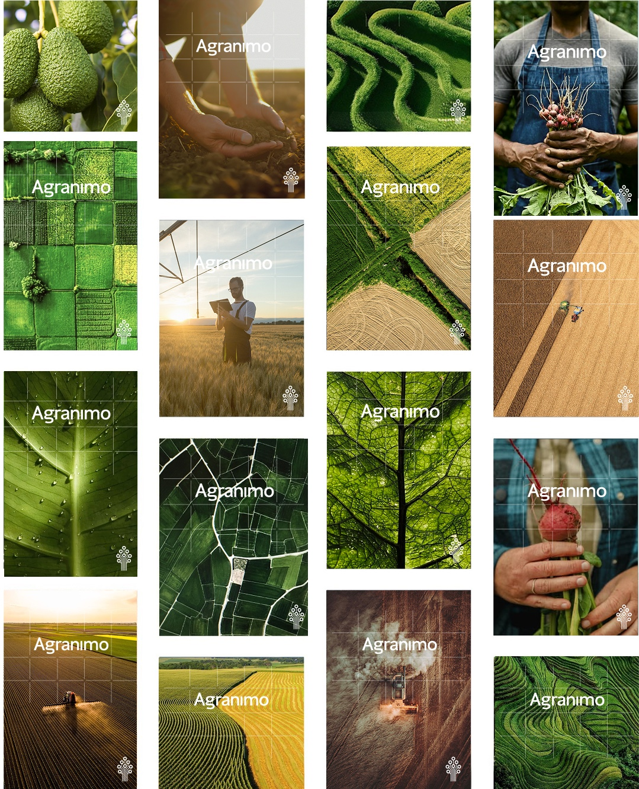
Brand communication.
I extended the identity into campaigns and print, adapting the photography, grid, typography and colours to each format and message.
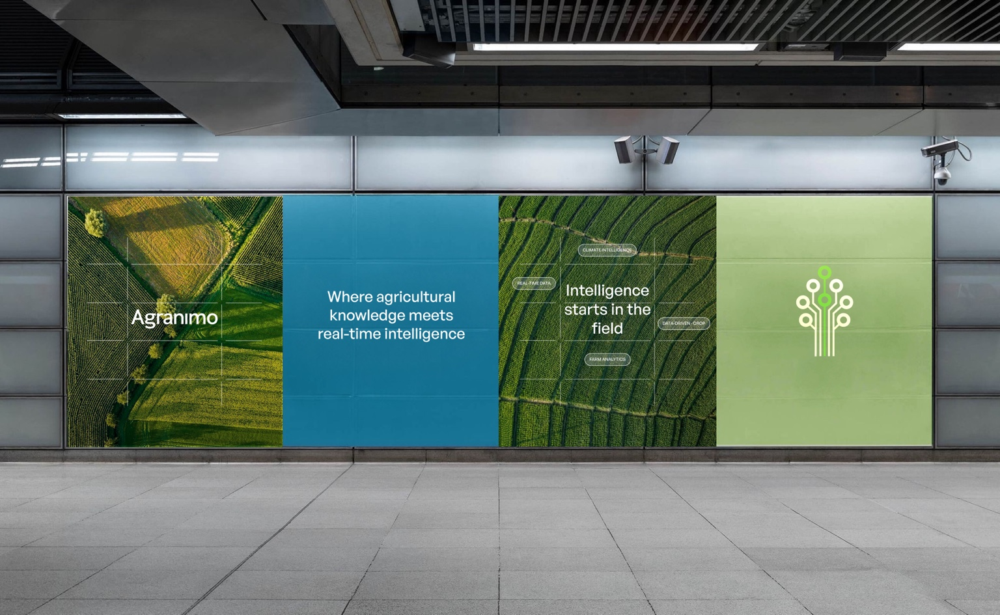
Large-format campaigns.
For large-format campaigns, I reduced the amount of information and gave the main message more space.
The same visual elements connect these applications to the wider identity.
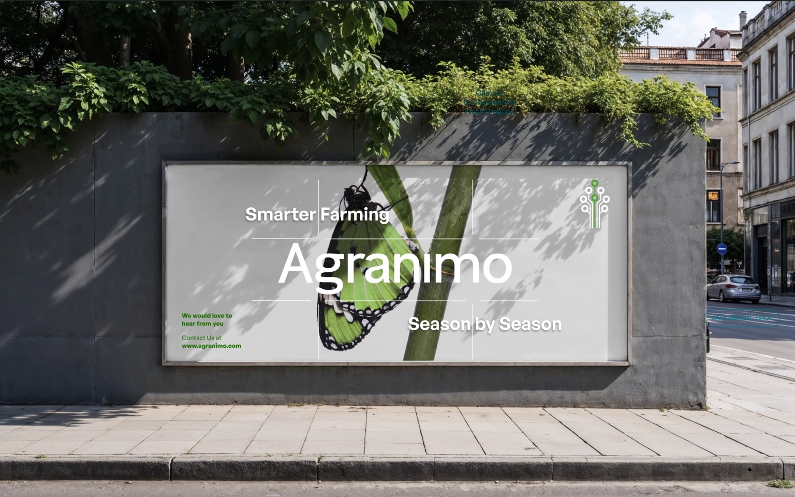
Print and brand collateral.
I applied the identity to printed materials and physical collateral, adjusting the layout and scale for each use.
Photography, colour, typography and the grid provide continuity across the different formats.
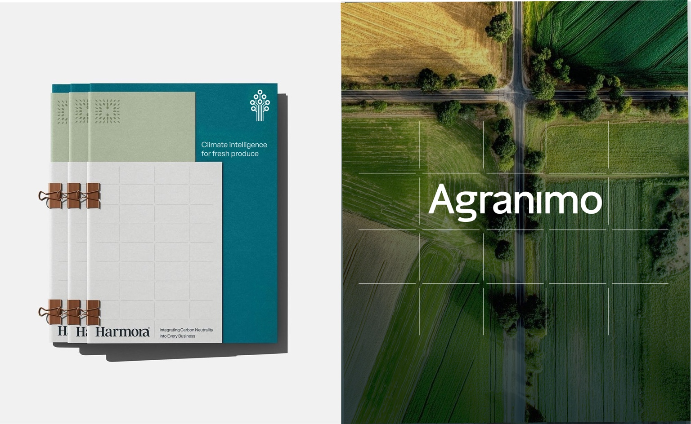
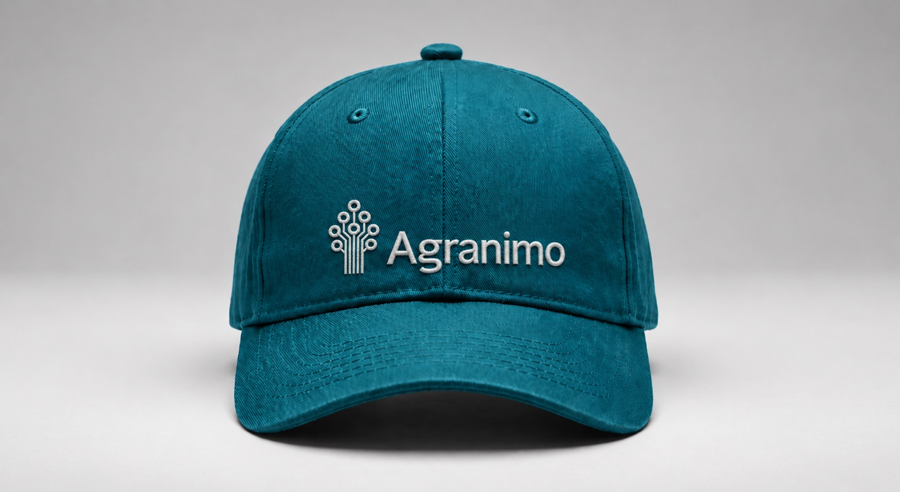
Developing the brand over time.
My work with Agranimo began with the visual identity and continued across its website, digital product, communication and physical applications.
Working across these areas allowed me to develop the identity over time and adapt it to new formats while keeping the brand consistent.
I enjoyed the opportunity to stay involved as the work expanded.
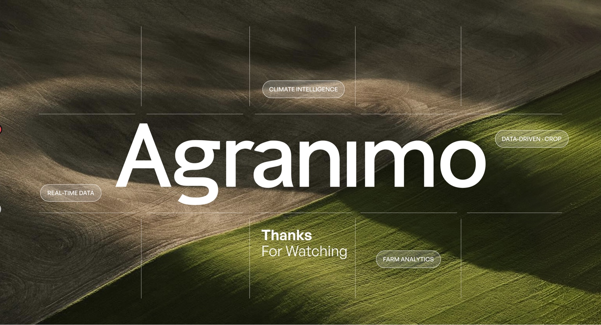